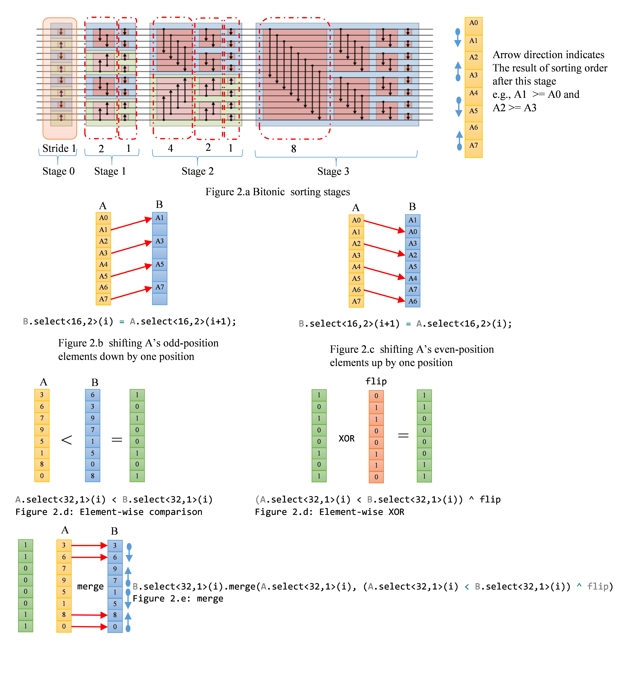
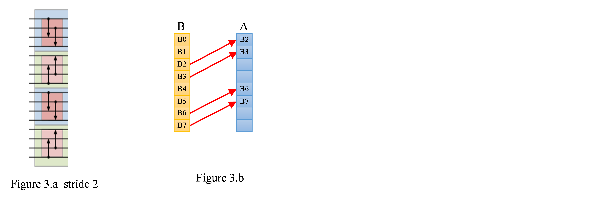
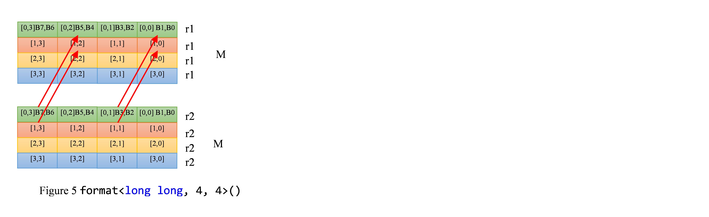

Tutorial 12. Kernel Deep-Dive: BitonicSort¶
In this tutorial, we use BitonicSort as an example to explain how to write effective kernel code.
Big picture: work division¶
To avoid loading/storing excessive data from/to memory, the implementation of the bitonic sort here tries to take advantage of GRF space and do as much work as possible locally without going through memory. The algorithm is implemented using 2 kernels, cmk_bitonic_sort_256 and cmk_bitonic_merge. Given an input, the algorithm first divides the data into 256-element chunks sorted by each HW threads. Since 256 elements are loaded into GRFs, swapping elements within a chunk leverages the expressiveness of Gen register regioning. Once cm_bitonic_sort_256 is complete, 256-elements are in bitonic sequence order as depicted in Figure 1. Cmk_bitonic_merge takes two 256-chunks and performs swapping elements based on the sorting order directions, ascending or descending.

Sorting 16-element segment¶
In order to explain the implementation of 256-element sort, we first start with how to sort each 16-element segment.
{kind=link}
16-element sort is implemented using functions bitonic_exchange{1,2,4,8}, which compare and swap elements with the particular strides. Figure 2.a shows all the steps.
The following is the code for bitonic_exchange1. Figure 2.b to Figure 2.e are the corresponding illustrations.
inline _GENX_ void bitonic_exchange1(vector_ref<unsigned int, BASE_SZ> A, vector_ref<unsigned int, BASE_SZ> B, vector_ref<uchar, 32> flip) {
#pragma unroll
// each thread is handling 256-element chunk. Each iteration
// compares and swaps two 32 elements
for (int i = 0; i < BASE_SZ; i += 32) {
// The first step is to select A's odd-position elements,
// indicated by A.select<16,2>(i), which selects 16 elements
// with stride 2 starting from location A[i], and copies
// the selected elements to B[i] location with stride 2.
vector_ref<unsigned, 32>T = B.select<32, 1>(i);
T.select<16, 2>(0) = A.select<16, 2>(i + 1);
// The next step selects 16 even-position elements starting
// from A[i+1] and copies them over to B's odd positions
// starting at B[i+1]. After the first two steps,
// all even-odd pair elements are swapped.
T.select<16, 2>(1) = A.select<16, 2>(i);
// The final step determines if the swapped pairs in B are
// the desired order and should be preserved. If not, their values
// are overwritten by their corresponding original values
// (before swapping). The comparisons determine which elements
// in B already meet the sorting order requirement and which are not.
// Consider the first two elements of A & B, B[0] and B[1] is
// the swap of A[0] and A[1]. Element-wise < comparison tells
// that A[0] < B[0], i.e., A[0] < A[1]. Since the desired sorting
// order is A[0] < A[1], however, we already swap the two values
// as we copy A to B. The XOR operation is to set the condition to
// indicate which elements in original vector A have the right sorting
// order. Those elements are then merged from A to B based on their
// corresponding conditions. Consider B[2] and B[3] in this case.
// The order already satisfies the sorting order. The flip vector
// passed to this stage is [0,1,1,0,0,1,1,0]. The flip bit of B[2]
// resets the condition so that the later merge operation preserves
// B[2] and won't copy from A[2].
B.select<32, 1>(i).merge(A.select<32, 1>(i), (A.select<32, 1>(i) < T) ^ flip);
}
}
The implementation of bitonic_exchange2, 4 and 8 are similar to bitonic_exchange1. The only difference is stride distance and different flip vector. Unlike other strides, the shuffling data patterns for stride 2 cannot be expressed concisely with Gen register regioning. Take the stride 2 in stage 1 as an example, depicted in Figure 3. The first step copies A[2], A[3], A[6] and A[7] to B[0], B[1], B[4] and B[5], respectively as indicated by red arrows in Figure 3.b.
{kind=link}
A straightforward CM implementation is to reshape vector A and B to 8x4 matrix and then use select() to copy elements. Reshaping vector to matrix does not generate any code. It is just a way how the compiler views the representation of the data of B. Let’s assume that vector B[0-31] reside in r10-13. format<unsigned int, 8,4>() intrinsic reshapes the same data into a 8x4 matrix representation as shown in Figure 4.a.
matrix_ref<unsigned int, 8, 4> MB = B.select<32, 1>(i).format<unsigned int, 8, 4>();
matrix_ref<unsigned int, 8, 4> MA = A.select<32, 1>(i).format<unsigned int, 8, 4>();
{kind=link}
Once both vector A and B are reshaped to 8x4 matrices, copying data from B to A is done by the following two simple CM statements.
MB.select<8, 1, 2, 1>(0, 0) = MA.select<8, 1, 2, 1>(0, 2);
MB.select<8, 1, 2, 1>(0, 2) = MA.select<8, 1, 2, 1>(0, 0);
The source of the copy, MA.select<8, 1, 2, 1>(0, 2), maps to region rule well, e.g., r20.2<8; 8, 2>:ud. However, the destination operand can have only horizontal stride, B.select<8, 1, 2, 1>(0, 0) cannot be mapped to Gen instruction efficiently. The copy operation will be broken into multiple native instructions. Each mov copies only two elements, which is not SIMD efficient.
mov (2) r122.0<1>:ud r57.2<2;2,1>:ud {Align1, Q1}
mov (2) r122.4<1>:ud r57.6<2;2,1>:ud {Align1, Q1}
mov (2) r123.0<1>:ud r58.2<2;2,1>:ud {Align1, Q1}
mov (2) r123.4<1>:ud r58.6<2;2,1>:ud {Align1, Q1}
. . .
To ameliorate the inefficiency caused by the destination restriction, we format vector A and B into matrix_ref<long long,4,4>. MB.select<4, 1, 2, 2>(0, 0) can be mapped to destination region well (stride 2) as shown in Figure 5.
{kind=link}
MB.select<4, 1, 2, 2>(0, 0) = MA.select<4, 1, 2, 2>(0, 1);
is compiled to
mov (4) r34.0<2>:q r41.1<2;1,0>:q {Align1, Q1}
mov (4) r36.0<2>:q r8.1<2;1,0>:q {Align1, Q1}
mov (4) r34.1<2>:q r41.0<2;1,0>:q {Align1, Q1}
mov (4) r36.1<2>:q r8.0<2;1,0>:q {Align1, Q1}
each mov copies four 64-bit data, which is 4X SIMD efficiency improvement over the straightforward implementation.
The following is the code for bitonic_exchange2.
inline _GENX_ void bitonic_exchange2(vector_ref<unsigned int, BASE_SZ> A, vector_ref<unsigned int, BASE_SZ> B, vector_ref<uchar, 32> flip) {
#pragma unroll
for (int i = 0; i < BASE_SZ; i += 32) {
matrix_ref<long long, 4, 4> MB = B.select<32, 1>(i).format<long long, 4, 4>();
matrix_ref<long long, 4, 4> MA = A.select<32, 1>(i).format<long long, 4, 4>();
MB.select<4, 1, 2, 2>(0, 0) = MA.select<4, 1, 2, 2>(0, 1);
MB.select<4, 1, 2, 2>(0, 1) = MA.select<4, 1, 2, 2>(0, 0);
B.select<32, 1>(i).merge(A.select<32, 1>(i), (A.select<32, 1>(i) < B.select<32, 1>(i)) ^ flip);
}
}
Sorting 256-element segment¶
To generate efficient code, bitonic_exchange{1,2,4,8} are inlined and loops that perform compare-and-swap are unrolled. The following code is just like what gets depicted in Figure 2.a. Init_masks are the flip vectors used during exchanges.
const uchar init_mask1[32] = {
0, 1, 1, 0, 0, 1, 1, 0,
0, 1, 1, 0, 0, 1, 1, 0,
0, 1, 1, 0, 0, 1, 1, 0,
0, 1, 1, 0, 0, 1, 1, 0
};
const uchar init_mask2[32] = {
0, 0, 1, 1, 1, 1, 0, 0,
0, 0, 1, 1, 1, 1, 0, 0,
0, 0, 1, 1, 1, 1, 0, 0,
0, 0, 1, 1, 1, 1, 0, 0
};
const uchar init_mask3[32] = {
0, 1, 0, 1, 1, 0, 1, 0,
0, 1, 0, 1, 1, 0, 1, 0,
0, 1, 0, 1, 1, 0, 1, 0,
0, 1, 0, 1, 1, 0, 1, 0
};
const uchar init_mask4[32] = {
0, 0, 0, 0, 1, 1, 1, 1,
1, 1, 1, 1, 0, 0, 0, 0,
0, 0, 0, 0, 1, 1, 1, 1,
1, 1, 1, 1, 0, 0, 0, 0
};
const uchar init_mask5[32] = {
0, 0, 1, 1, 0, 0, 1, 1,
1, 1, 0, 0, 1, 1, 0, 0,
0, 0, 1, 1, 0, 0, 1, 1,
1, 1, 0, 0, 1, 1, 0, 0
};
const uchar init_mask6[32] = {
0, 1, 0, 1, 0, 1, 0, 1,
1, 0, 1, 0, 1, 0, 1, 0,
0, 1, 0, 1, 0, 1, 0, 1,
1, 0, 1, 0, 1, 0, 1, 0
};
const uchar init_mask7[32] = {
0, 0, 0, 0, 0, 0, 0, 0,
1, 1, 1, 1, 1, 1, 1, 1,
1, 1, 1, 1, 1, 1, 1, 1,
0, 0, 0, 0, 0, 0, 0, 0
};
const uchar init_mask8[32] = {
0, 0, 0, 0, 1, 1, 1, 1,
0, 0, 0, 0, 1, 1, 1, 1,
1, 1, 1, 1, 0, 0, 0, 0,
1, 1, 1, 1, 0, 0, 0, 0
};
const uchar init_mask9[32] = {
0, 0, 1, 1, 0, 0, 1, 1,
0, 0, 1, 1, 0, 0, 1, 1,
1, 1, 0, 0, 1, 1, 0, 0,
1, 1, 0, 0, 1, 1, 0, 0
};
const uchar init_mask10[32] = {
0, 1, 0, 1, 0, 1, 0, 1,
0, 1, 0, 1, 0, 1, 0, 1,
1, 0, 1, 0, 1, 0, 1, 0,
1, 0, 1, 0, 1, 0, 1, 0
};
// The first few stages are implemented with double buffers, A and B,
// which reside in GRF.The output of a stride exchange step is fed
// into the next exchange step as the input.cmk_read loads a 256-element
// chunk starting at offset into vector A. The flip vectors basically
// indicate what the desired sorting order for swapping.
vector<unsigned int, BASE_SZ> A;
vector<unsigned int, BASE_SZ> B;
cmk_read<unsigned int, BASE_SZ> (index1, offset, A);
vector<uchar, 32> flip1(init_mask1);
vector<unsigned short, 32> mask;
// stage 0
bitonic_exchange1(A, B, flip1);
// stage 1
vector<uchar, 32> flip2(init_mask2);
vector<uchar, 32> flip3(init_mask3);
bitonic_exchange2(B, A, flip2);
bitonic_exchange1(A, B, flip3);
// stage 2
vector<uchar, 32> flip4(init_mask4);
vector<uchar, 32> flip5(init_mask5);
vector<uchar, 32> flip6(init_mask6);
bitonic_exchange4(B, A, flip4);
bitonic_exchange2(A, B, flip5);
bitonic_exchange1(B, A, flip6);
// stage 3
vector<uchar, 32> flip7(init_mask7);
vector<uchar, 32> flip8(init_mask8);
vector<uchar, 32> flip9(init_mask9);
vector<uchar, 32> flip10(init_mask10);
bitonic_exchange8(A, B, flip7);
bitonic_exchange4(B, A, flip8);
bitonic_exchange2(A, B, flip9);
bitonic_exchange1(B, A, flip10);
However, we need to avoid bloating code size in the meantime. Hence, Stage 4 to 7 are handled in a more generic fashion. Bitonic_merge takes care of one stage that handles all recursion exchange steps. Once 7 stages are done, 256 sorted elements are written out via cmk_write().
// stage 4,5,6,7 use generic bitonic_merge routine
for (int i = 4; i < 8; i++)
bitonic_merge(h_pos*BASE_SZ, A, i, i);
// cmk_write writes out sorted data to the output buffer.
cmk_write<unsigned int, BASE_SZ>(index2, offset, A);
Let’s look at how bitonic_merge is implemented. A bitonic stage N has recursive steps to compare and swap elements with stride 1<<N, 1<<(N-1), …, 8, 4, 2, 1. bitonic_merge is GRF based implementation that handles stride 1 to 128 compare-and-swap steps. For stride <= 128, 256 data items are kept in GRF. All compare-and-swap can all be completely done with GRF locally. Doing so avoids global synchronizations and repeating load/store 256-element chunks. Parameter m indicates the bitonic stage. Parameter n indicates that bitonic_merge is handling stride 1<<n for bitonic stage m.
// bitonic_merge for stage m has recursive steps to compare and swap
// elements with stride 1 << m, 1 << (m - 1), ... , 8, 4, 2, 1.
// bitonic_merge is GRF based implementation that handles stride
// 1 to 128 compare - and - swap steps.For stride <= 128, 256 data
// items are kept in GRF. All compare-and-swap can all be completely
// done with GRF locally. Doing so avoids global synchronizations
// and repeating loads/stores. Parameter n indicates that bitonic_merge
// is handling stride 1 << n for bitonic stage m.
inline _GENX_ void bitonic_merge(unsigned int offset, vector_ref<unsigned int, BASE_SZ> A, unsigned int n, unsigned int m)
{
// dist is the stride distance for compare-and-swap
unsigned int dist = 1 << n;
// number of exchange passes we need
// this loop handles stride distance 128 down to 16. Each iteration
// the distance is halved. Due to data access patterns of stride
// 8, 4, 2 and 1 are within one GRF, those stride distance are handled
// by custom tailored code to take advantage of register regioning.
for (int k = 0; k < n-3; k++, dist >>= 1) {
// Each HW thread process 256 data elements. For a given stride
// distance S, 256 elements are divided into 256/(2*S) groups.
// within each group, two elements with distance S apart are
// compared and swapped based on sorting direction.
// This loop basically iterates through each group.
for (int i = 0; i < BASE_SZ; i += dist * 2) {
// Every bitonic stage, we need to maintain bitonic sorting order.
// Namely, data are sorted into alternating ascending and descending
// fashion. As show in Figure 9, the light blue background regions
// are in ascending order, the light green background regions in
// descending order. Whether data are in ascending or descending
// regions depends on their position and the current bitonic stage
// they are in. "offset+i" the position. For stage m, data of
// chunks of 1<<(m+1) elements in all the stride steps have the
// same order.
bool dir_up = (((offset + i) >> (m + 1)) & 1) == 0;
// each iteration swap 2 16-element chunks
for (int j = 0; j < dist>>4; j++) {
vector<unsigned int, 16> T = A.select<16, 1>(i + j * 16);
vector_ref<unsigned int, 16> T1 = A.select<16, 1>(i + j * 16);
vector_ref<unsigned int, 16> T2 = A.select<16, 1>(i + j * 16 + dist);
if (dir_up) {
T1.merge(T2, T2 < T1);
T2.merge(T, T > T2);
}
else {
T1.merge(T2, T2 > T1);
T2.merge(T, T < T2);
}
}
}
}
// Stride 1, 2, 4, and 8 in bitonic_merge are custom tailored to
// take advantage of register regioning. The implementation is
// similar to bitonic_exchange{1,2,4,8}.
// exchange 8
vector<uchar, 32> flip13(init_mask13);
vector<uchar, 32> flip14(init_mask14);
vector<unsigned int, BASE_SZ> B;
for (int i = 0; i < BASE_SZ; i += 32) {
B.select<8, 1>(i) = A.select<8, 1>(i + 8);
B.select<8, 1>(i + 8) = A.select<8, 1>(i);
B.select<8, 1>(i + 16) = A.select<8, 1>(i + 24);
B.select<8, 1>(i + 24) = A.select<8, 1>(i + 16);
bool dir_up = (((offset + i) >> (m + 1)) & 1) == 0;
if (dir_up)
B.select<32, 1>(i).merge(A.select<32, 1>(i), (A.select<32, 1>(i) < B.select<32, 1>(i)) ^ flip13);
else
B.select<32, 1>(i).merge(A.select<32, 1>(i), (A.select<32, 1>(i) < B.select<32, 1>(i)) ^ flip14);
}
// exchange 4
vector<uchar, 32> flip15(init_mask15);
vector<uchar, 32> flip16(init_mask16);
#pragma unroll
for (int i = 0; i < BASE_SZ; i += 32) {
matrix_ref<unsigned int, 4, 8> MA = A.select<32, 1>(i).format<unsigned int, 4, 8>();
matrix_ref<unsigned int, 4, 8> MB = B.select<32, 1>(i).format<unsigned int, 4, 8>();
MA.select<4, 1, 4, 1>(0, 0) = MB.select<4, 1, 4, 1>(0, 4);
MA.select<4, 1, 4, 1>(0, 4) = MB.select<4, 1, 4, 1>(0, 0);
bool dir_up = (((offset + i) >> (m + 1)) & 1) == 0;
if (dir_up)
A.select<32, 1>(i).merge(B.select<32, 1>(i), (B.select<32, 1>(i) < A.select<32, 1>(i)) ^ flip15);
else
A.select<32, 1>(i).merge(B.select<32, 1>(i), (B.select<32, 1>(i) < A.select<32, 1>(i)) ^ flip16);
}
// exchange 2
vector<uchar, 32> flip17(init_mask17);
vector<uchar, 32> flip18(init_mask18);
#pragma unroll
for (int i = 0; i < BASE_SZ; i += 32) {
matrix_ref<long long, 4, 4> MB = B.select<32, 1>(i).format<long long, 4, 4>();
matrix_ref<long long, 4, 4> MA = A.select<32, 1>(i).format<long long, 4, 4>();
MB.select<4, 1, 2, 2>(0, 0) = MA.select<4, 1, 2, 2>(0, 1);
MB.select<4, 1, 2, 2>(0, 1) = MA.select<4, 1, 2, 2>(0, 0);
bool dir_up = (((offset + i) >> (m + 1)) & 1) == 0;
if (dir_up)
B.select<32, 1>(i).merge(A.select<32, 1>(i), (A.select<32, 1>(i) < B.select<32, 1>(i)) ^ flip17);
else
B.select<32, 1>(i).merge(A.select<32, 1>(i), (A.select<32, 1>(i) < B.select<32, 1>(i)) ^ flip18);
}
// exchange 1
vector<uchar, 32> flip19(init_mask19);
vector<uchar, 32> flip20(init_mask20);
#pragma unroll
// Each iteration compares and swaps 2 32-element chunks
for (int i = 0; i < BASE_SZ; i += 32) {
// As aforementioned in bitonic_exchange1.
// switch even and odd elements of B and put them in A.
vector_ref<unsigned, 32> T = A.select<32, 1>(i);
T.select<16, 2>(0) = B.select<16, 2>(i + 1);
T.select<16, 2>(1) = B.select<16, 2>(i);
// determine whether data are in ascending or descending regions
// depends on their position and the current bitonic stage
// they are in. "offset+i" is the position. For stage m,
// data of chunks of 1<<(m+1) elements in all the stride steps
// have the same order. For instance, in stage 4, all first 32 elements
// are in ascending order and the next 32 elements are in descending
// order. "&1" determines the alternating ascending and descending order.
bool dir_up = (((offset + i) >> (m + 1)) & 1) == 0;
// choose flip vector based on the direction (ascending or descending).
// Compare and swap
if (dir_up)
A.select<32, 1>(i).merge(B.select<32, 1>(i), (B.select<32, 1>(i) < T) ^ flip19);
else
A.select<32, 1>(i).merge(B.select<32, 1>(i), (B.select<32, 1>(i) < T) ^ flip20);
}
}
{kind=link}
Sorting more than 256 elements¶
A bitonic stage sorts elements with butterfly network. For a stage K, each compare-and-swap step halves the stride distance of its prior step. The recursive step continues until stride distance 1 is complete. When stride distance is greater than 7, there is global synchronization between two steps i and i+1. Each HW thread reads processes two 256-element chunks as depicted in Figure 8. The 256-element blocks circled by light-blue dotted lines are processed by one HW threads. Global synchronization is done via enqueue from the host side. CM equeue is complete in FIFO order. Namely, one task will finish its job before the next enqueued tasks starts. The following code snippet is from the host code, BitonicSort.cpp, which is also depicted in Figure 7.
// Each HW thread swap two 256-element chunks. Hence, we only need
// to launch size/ (base_sort_size*2) HW threads
total_threads = size / (base_sort_size_ * 2);
if (total_threads < MAX_TS_WIDTH) {
width = total_threads;
height = 1;
}
else {
width = MAX_TS_WIDTH;
height = total_threads / MAX_TS_WIDTH;
}
CmThreadSpace *mergeSpace = nullptr;
cm_result_check(device->CreateThreadSpace(width, height, mergeSpace));
// create merge kernel
CmKernel *bitonicMerge = nullptr;
cm_result_check(device->CreateKernel(program,
"cmk_bitonic_merge",
bitonicMerge));
// buffer that holds stage 7's result. All subsequent stages are writing
// intermediate and final results to the same buffer so that we only need
// to set this argument once
bitonicMerge->SetKernelArg(0, sizeof(SurfaceIndex), buf2Idx);
// Creates a CmTask object.
CmTask *mergeTask = nullptr;
cm_result_check(device->CreateTask(mergeTask));
cm_result_check(mergeTask->AddKernel(bitonicMerge));
// enqueue merge kernel multiple times
// this loop is for stage 8 to stage LOG2_ELEMENTS.
int k = 0;
CmEvent *mergeEvent[(LOG2_ELEMENTS-8)*(LOG2_ELEMENTS-7)/2];
for (int i = 8; i < LOG2_ELEMENTS; i++) {
// each step halves the stride distance of its prior step.
// 1<<j is the stride distance that the invoked step will handle.
// The recursive steps continue until stride distance 1 is complete.
// For stride distance less than 1<<8, no global synchronization
// is needed, i.e., all work can be done locally within HW threads.
// Hence, the invocation of j==8 cmk_bitonic_merge finishes stride 256
// compare-and-swap and then performs stride 128, 64, 32, 16, 8, 4, 2, 1
// locally.
for (int j = i; j >= 8; j--) {
bitonicMerge->SetKernelArg(1, sizeof(int), &j);
// need i to determine bitonic order direction
bitonicMerge->SetKernelArg(2, sizeof(int), &i);
mergeEvent[k] = nullptr;
cm_result_check(cmd_queue->Enqueue(mergeTask, mergeEvent[k], mergeSpace));
k++;
}
}

Finally, here is the cmk_bitonic_merge kernel
_GENX_MAIN_ void cmk_bitonic_merge(SurfaceIndex index, unsigned int n, unsigned int m)
{
// threads are mapped to a 2D space. take 2D origin (x,y) and unfold them
// to get the thread position in 1D space. use tid read the data chunks
// the thread needs to read from the index surface
uint tid = get_thread_origin_x() + get_thread_origin_y()*MAX_TS_WIDTH;
// which 2-to-(n+1) segment the thread needs to work on
// each thread swap two 256-element blocks.
unsigned int seg = tid / (1 << (n - 8));
unsigned int seg_sz = 1 << (n + 1);
// calculate the offset of the data this HW is reading. seg*seg_sz is
// the starting address of the segment the thread is in. As aforementioned,
// each segment needs 1<<(n-8) threads. tid%(1<<(n-8) which 256-element
// chunk within the segment this HW thread is processing.
unsigned int offset = (seg * seg_sz + (tid % (1 << (n - 8))*BASE_SZ));
// stride distance
unsigned int dist = 1 << n;
// determine whether data are in ascending or descending regions depends on
// their position and the current bitonic stage they are in.
// "offset" is the position. For stage m, data of chunks of 1<<(m+1)
// elements in all the stride steps have the same order.
// "&1" determines the alternating ascending and descending order.
bool dir_up = ((offset >> (m + 1)) & 1) == 0;
// read oword 32 elements each time
vector<unsigned int, BASE_SZ> A;
vector<unsigned int, BASE_SZ> B;
#pragma unroll
for (int i = 0; i < BASE_SZ; i += 32) {
// byte offset
cmk_read<unsigned int, 32>(index, (offset + i) << 2, A.select<32,1>(i));
cmk_read<unsigned int, 32>(index, (offset + i + dist) << 2, B.select<32, 1>(i));
// compare 32 elements at a time and merge the result based on
// the sorting direction
vector<unsigned int, 32> T = A.select<32, 1>(i);
if (dir_up) {
A.select<32, 1>(i).merge(B.select<32, 1>(i), B.select<32, 1>(i) < A.select<32, 1>(i));
B.select<32, 1>(i).merge(T, T > B.select<32, 1>(i));
}
else {
A.select<32, 1>(i).merge(B.select<32, 1>(i), B.select<32, 1>(i) > A.select<32, 1>(i));
B.select<32, 1>(i).merge(T, T < B.select<32, 1>(i));
}
}
// Once stride distance 256 is reached, all subsequent recursive steps
// (n = 7, 6, ..., 1) can be resolved locally as all data reside
// in vector A and B. Thus, reduce the overhead of returning back to
// the host side and relaunch tasks. Also writing data back to
// memory and reading it back is avoided. bitonic_merge is
// the routine explained earlier.
if (n == 8) {
// Vector A has 256 elements. Call bitonic_merge to process
// the remaining stride distance for A. A's sorted result is
// immediately written out to memory. Doing so avoids spilling
// because A's lifetime ends without interfering with
// bitonic_merge(... B ...)
bitonic_merge(offset, A, 7, m);
cmk_write<unsigned int, BASE_SZ>(index, offset << 2, A);
bitonic_merge(offset + dist, B, 7, m);
cmk_write<unsigned int, BASE_SZ>(index, (offset + dist) << 2, B);
}
else {
cmk_write<unsigned int, BASE_SZ>(index, offset << 2, A);
cmk_write<unsigned int, BASE_SZ>(index, (offset + dist) << 2, B);
}
}
{kind=link}